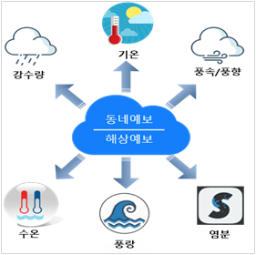

사업배경
기상청에서는 기상정보를 지역의 특화 산업과 연계하여 다향한 특성분석을 통해 지역기상융합서비스를 개발하는 사업을 추진
전복 산업은 우리나라 생산량이 전 세계 2위, 전라남도 생산량은 전국 약 98%를 차지하는 지역 주력산업
기상청과 관계기관과의 협업을 통해 전복 산업 지원을 위한 해양기상 융합서비스를 개발하고 있음
지역 기상과 해양 변화 특성을 고려한 전복 맞춤형 해양기상 융합서비스는 지역 연고산업을 육성 지원하여 기상산업육성과
지역 경제 활성화에 기여
사업목적
전남의 전복 양식 생산량은 전국의 98%, 그 중 완도군이 81% 생산
완도군의 전복양식은 다양한 원인(적조, 양식시설의 밀집화 등)으로 생산량 감소 등의 피해가 발생
기후변화에 따른 이상기후에 취약한 전복 산업에 대해 맞춤형 해양기상 융합서비스를 개발·제공
경험적 지배에 의존하던 양식기술을 빅데이터를 활용한 기상기후기술과 융합
사업내용

최근 기후변화와 해양환경변화 등에 따라 생산량에 영향을 크게 받는 전복 산업의 회복을 위해 완도 주변해역 해양, 기상, 환경 파악
관측된 해양기상자료와 전복 생산자료/ 전문가 자문회의/ 설문조사를 통한 전복/해조류 작업지수 산정
전복 산업 맞춤형 융합 해양기후정보 서비스 개발
설문조사를 통해 어민들의 의견을 적극적으로 수렴
선정한 요소에 각각 가중치를 부여하여 입식/양성/수확 시기 작업지수를 도출